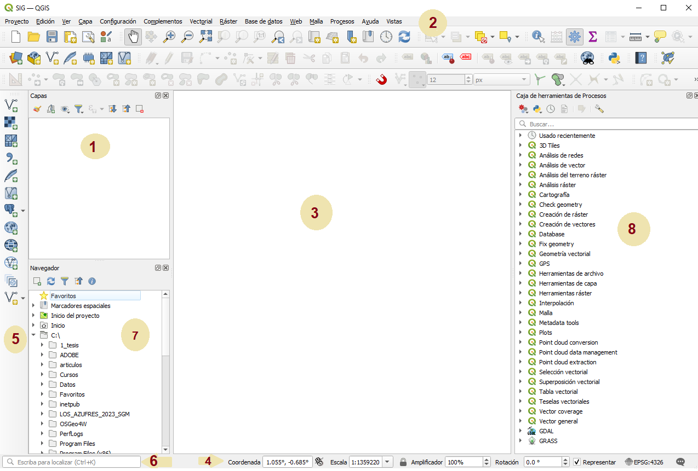

En esta sección aprenderás los pasos básicos para iniciar un nuevo proyecto en QGIS. Comenzaremos con la creación de un proyecto vacío y la configuración inicial para trabajar de forma ordenada.
Al abrir el programa, se muestra la interfaz principal, compuesta por menús, barras de herramientas y áreas de trabajo.
Puedes consultar una descripción más detallada en el siguiente enlace:
